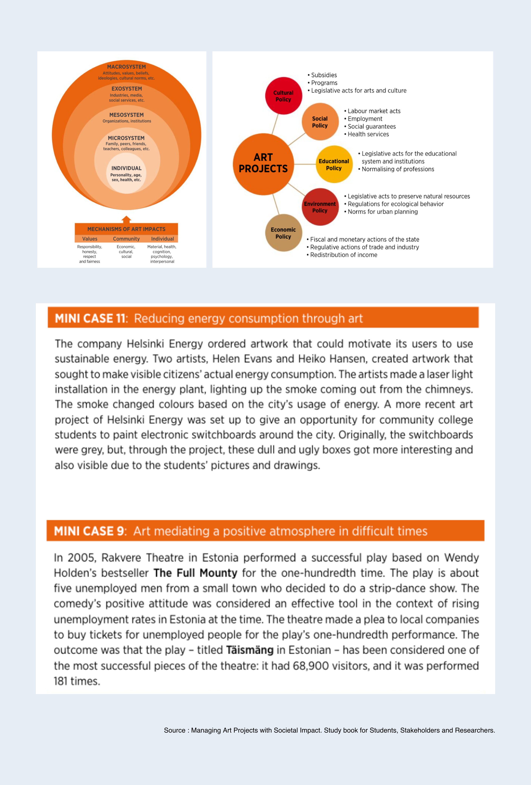
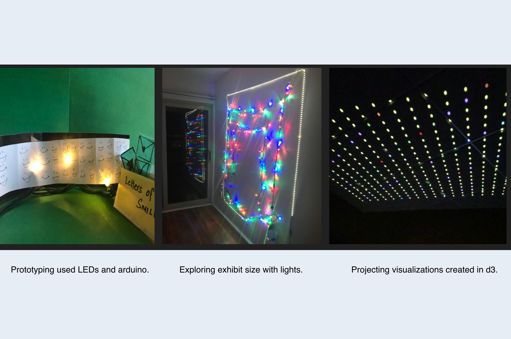

Tools used: 
Through a individual project I explored the idea of creating an art exhibit which mediates a positive atmosphere and creates awareness about issues in inaccessible parts of the world . This was a masters' final project and hlped me appreciate ideas of speculative thinking, sustainable design, design noirs, and humanity centered design.
Product Designer, UX Designer
This was an individual project and required me to take on multiple roles. I also incorporated user feedback in the research, brainstorming, and prototyping phase to ensure creating an unbiased exhibit.
This drone footage shows thousands of #Rohingya #refugees crossing the Naf river into Bangladesh. via @Refugees https://t.co/9Lunvc09Ix
— UN Humanitarian (@UNOCHA) October 17, 2017
The #Rohingya are facing a "lost generation" of children out of school. UNICEF is on the ground working to reach children with the education they deserve. https://t.co/sjEFs7IWPK
— UNICEF USA (@UNICEFUSA) January 8, 2019

Shortcuts to highlights from the design process:
-
Secondary Research
WHY?
The numerous publications on immigrant issues, popular data visualizations, and case studies on museums provided content for brainstorming and ideation.
-
Interviews and Data Gathering
WHY?
A sucessful museum exhibit would depend on the visitors feedback. I also wanted to gauge how much people knew about the global refugee crisis.
-
Exhibit Prototypes
WHY?
To understand the conveyed visual message, exhibit size, and overall impact.
-
User Enactments and Final Prototype
WHY?
To evaluate visitor reactions and interest in the exhibit.
This step concentrated on learning about managing art projects with societal impact. I also studied many exhibits like "How to make sense of the art + data?" created by Giorgia Lupi.
In this exhibit she explores the notion of inclusive growth and the role that heritage can play in contributing to social inclusion as well as economic growth for sustainable development.Literature reviews and a detailed study of cases on art exhibits showed how art influences the society and can mediate difficult times. 

The quickest way to get feedback was sharing my prototype with peers and potential visitors.

User enactments finalized the workflow for the exhibit. How would users encounter the exhibit? How would they exit it? Here are a few snaps from the user enactments conducted.
The final prototype had four main parts: Exploring, Learning, Participating, and Reflecting
Exploring: Visitors would enter a dark room with data visualizations projected on one of the walls. They would view it and then exit the room.
Learning: At the exit door visitors would encounter information boards explaining the digital art they viewed.
Participating: They would then be given an oppurtunity to send a handwritten message to children in the Rohingya refugee camps. Then they would be guided to look into a key hole.
Reflecting: The keyhole would allow them to look back into the same room and view another visualization, this time with more information about what they were looking at.

Making this exhibit helped me appreciate art, making, and prototyping.
My project focuses on refugees and the alarming atrocities against them. Through my research I learned about artists, teachers, designers, and engineers working towards solving different aspects of the global refugee crisis. They served as great inspirations while diverging on ideas, solving conflicts, and testing when my ideas didn’t work as expected. If I could go back in time and change something I would probably start the prototyping and ‘making’ phase using raw ideas much earlier. Apart from brainstorming another aspect of the process I got stuck on was narrowing my focus to one particular group of refugees. After using my physical design workbook to collect answers for questions like “What do you think refugee camps look like” and “Who do you think refugees are”, I got a true sense of what users felts about the cause. Expert interviews reinforced the same conclusion that there was no particular bias towards a specific group of refugees within the general public, it was more about awareness of what was happening in other inaccessible parts of the world.